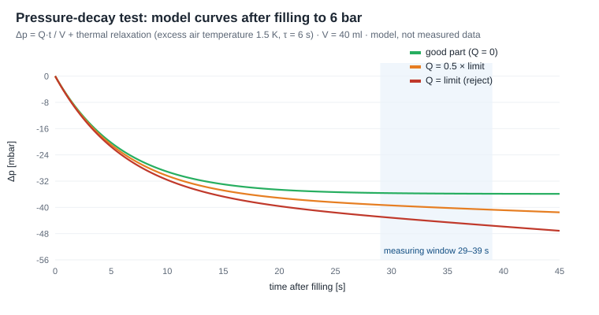

End-of-line leak test for a threaded valve housingEOL-Dichtheitsprüfung für ein Ventilgehäuse mit Gewinde
Design of a pressure-decay leak test for 100 % end-of-line testing of the threaded valve housing from my SOLIDWORKS portfolio, with compressed air at 6 bar. I worked out the reject threshold, the test-cycle time, the sensor requirements and the station throughput.Auslegung einer Druckabfall-Dichtheitsprüfung zur 100-%-Endprüfung (EOL) des Ventilgehäuses aus meinem SOLIDWORKS-Portfolio, mit Druckluft bei 6 bar. Ich habe Grenzwert, Taktzeit, Sensoranforderungen und Durchsatz der Prüfstation ermittelt.
Concept study: the curves are from a physics model with assumed parameters, not measured data.Konzeptstudie: Die Kurven stammen aus einem physikalischen Modell mit angenommenen Parametern, nicht aus Messdaten.
QuestionsFragestellungen
TaskAufgabe
- Which pressure drop separates good from leaky parts?Welcher Druckabfall trennt Gut- von undichten Teilen?
- How long must the test cycle be?Wie lang muss der Prüfzyklus sein?
- Which pressure sensor is good enough?Welcher Drucksensor ist gut genug?
- How many parts per hour can one station test?Wie viele Teile pro Stunde schafft eine Station?

AssumptionsAnnahmen
| Test pressurePrüfdruck | 6 bar (gauge), i.e. 7013 mbar absolute6 bar (Überdruck), d. h. 7013 mbar absolut |
|---|---|
| Test volumePrüfvolumen | 40 ml (valve cavity + fixture + lines; concept assumption)40 ml (Ventilraum + Aufnahme + Leitungen; Konzeptannahme) |
| Reject limitGrenzleckrate | Q = 1·10⁻² mbar·l/s (≈ 0.6 cm³/min at atmosphere)Q = 1·10⁻² mbar·l/s (≈ 0,6 cm³/min bei Atmosphäre) |
| Air heating after fast fillingLufterwärmung nach schnellem Füllen | ΔT₀ = 1.5 K, decaying with τ = 6 s (order of magnitude; to be measured on the real fixture)ΔT₀ = 1,5 K, abklingend mit τ = 6 s (Größenordnung; an der realen Aufnahme zu messen) |
| Fill / vent timeFüll- / Entlüftungszeit | 3 s / 2 s |
PhysicsPhysik
So the test is not limited by the sensor but by thermal stabilisation.Die Prüfung wird also nicht durch den Sensor begrenzt, sondern durch die thermische Stabilisierung.

Test-cycle designAuslegung des Prüfzyklus
Criterion: the thermal drift inside the measuring window must be ≤ 10 % of the leak signal at the reject limit.Kriterium: Die thermische Drift im Messfenster darf höchstens 10 % des Lecksignals an der Grenzleckrate betragen.
| MethodVerfahren | Measuring windowMesszeit | Settle timeBeruhigungszeit | Cycle timeTaktzeit | Parts/hourTeile/h |
|---|---|---|---|---|
| Absolute pressure decayAbsolute Druckabfallprüfung | 10 s | 29 s | 44 s | 81 |
| Absolute pressure decayAbsolute Druckabfallprüfung | 20 s | 25.5 s | 50.5 s | 71 |
| Differential vs. a reference part (≈ 90 % thermal compensation)Differenzverfahren gegen Referenzteil (≈ 90 % thermische Kompensation) | 10 s | 15 s | 30 s | 120 |
Recommendation for series productionEmpfehlung für die Serie
The differential method compares the test part with a sealed, identical reference part that is filled at the same time, so the common thermal effect largely cancels out. This saves 14 s per part (−32 % cycle time).Das Differenzverfahren vergleicht das Prüfteil mit einem dichten, baugleichen Referenzteil, das gleichzeitig befüllt wird – der gemeinsame thermische Effekt hebt sich weitgehend auf. Das spart 14 s pro Teil (−32 % Taktzeit).
Gauge capability (MSA type 1)Messmittelfähigkeit (MSA Typ 1)
- Test signal band (0 to reject limit) = 2.5 mbar. For Cg = 0.2·T / (6·s) ≥ 1.33 the repeatability must be s ≤ 0.063 mbar – to be shown with a type 1 study: 25 measurements on a master part, plus one with a calibrated test leak at the limit.Signalband (0 bis Grenzleckrate) = 2,5 mbar. Für Cg = 0,2·T / (6·s) ≥ 1,33 muss die Wiederholpräzision s ≤ 0,063 mbar sein – nachzuweisen mit einer Typ-1-Studie: 25 Messungen an einem Meisterteil, dazu eine mit kalibriertem Testleck an der Grenze.
- Sensor resolution 0.1 mbar = 1/25 of the band – sufficient (rule: ≤ 1/10).Sensorauflösung 0,1 mbar = 1/25 des Bandes – ausreichend (Regel: ≤ 1/10).
- The station needs a calibrated test leak (e.g. 1·10⁻² mbar·l/s) for the daily function check.Die Station braucht ein kalibriertes Testleck (z. B. 1·10⁻² mbar·l/s) für die tägliche Funktionsprüfung.
LimitationsGrenzen
- Concept study with model curves, not measured data. Real τ and ΔT₀ depend on the fixture, the part mass and the fill speed and must be measured before setting the parameters.Konzeptstudie mit Modellkurven, keine Messdaten. Reale Werte für τ und ΔT₀ hängen von Aufnahme, Teilemasse und Füllgeschwindigkeit ab und müssen vor der Parametrierung gemessen werden.
- The model is isothermal apart from the fill heating; part deformation (volume change) under pressure is not modelled.Das Modell ist abgesehen von der Füllerwärmung isotherm; die Verformung des Teils (Volumenänderung) unter Druck ist nicht modelliert.
What I learnedWas ich gelernt habe
- In pressure-decay testing the physics of the air, not the sensor, sets the cycle time – a 0.1 K change already equals the whole leak signal.Bei der Druckabfallprüfung bestimmt die Physik der Luft, nicht der Sensor, die Taktzeit – schon 0,1 K entsprechen dem gesamten Lecksignal.
- How a reference-part (differential) method turns a physics insight into −32 % cycle time.Wie ein Differenzverfahren mit Referenzteil aus einer physikalischen Erkenntnis −32 % Taktzeit macht.
- Deriving sensor requirements from gauge capability (Cg) instead of from a catalogue.Sensoranforderungen aus der Messmittelfähigkeit (Cg) ableiten statt aus dem Katalog.